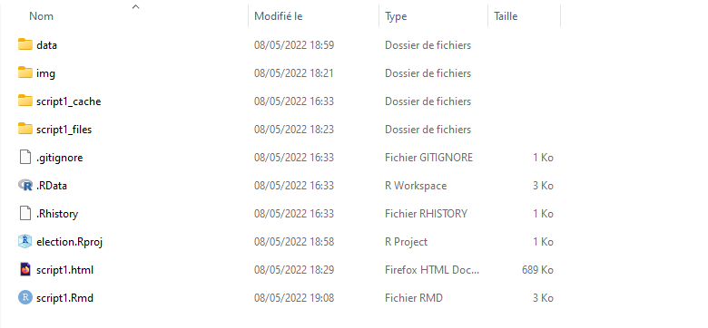
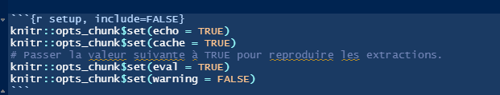
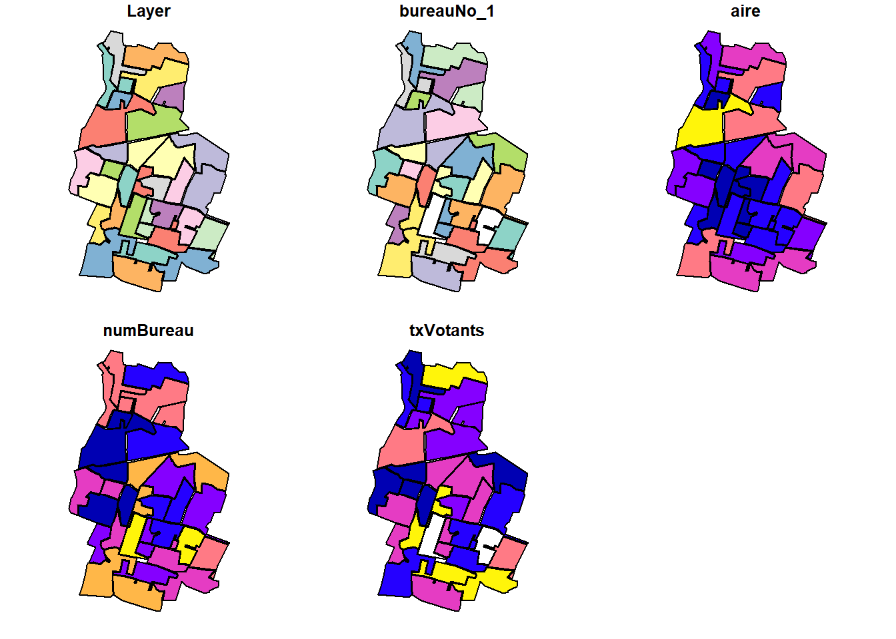
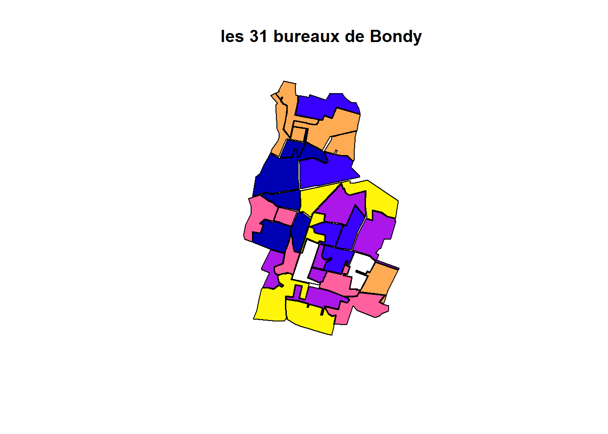
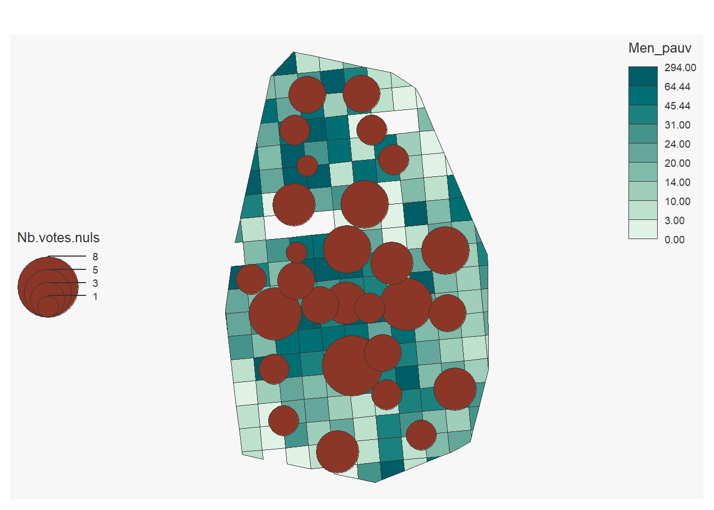
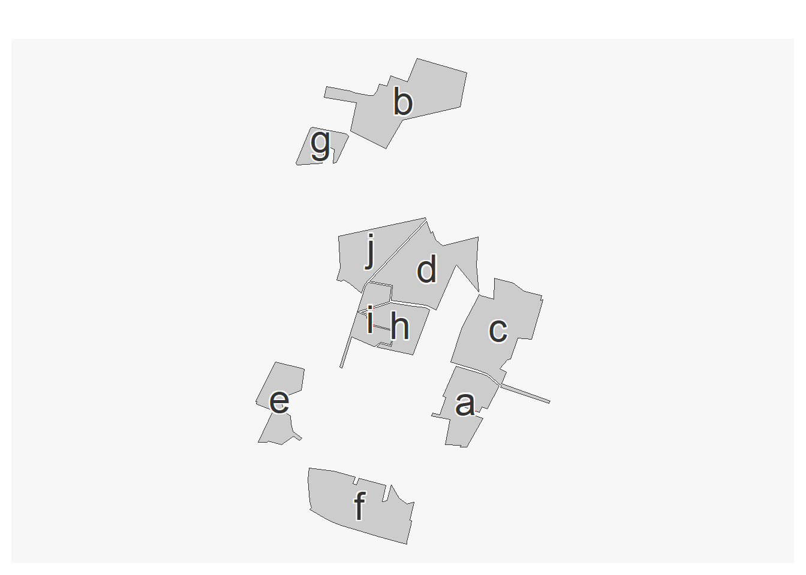
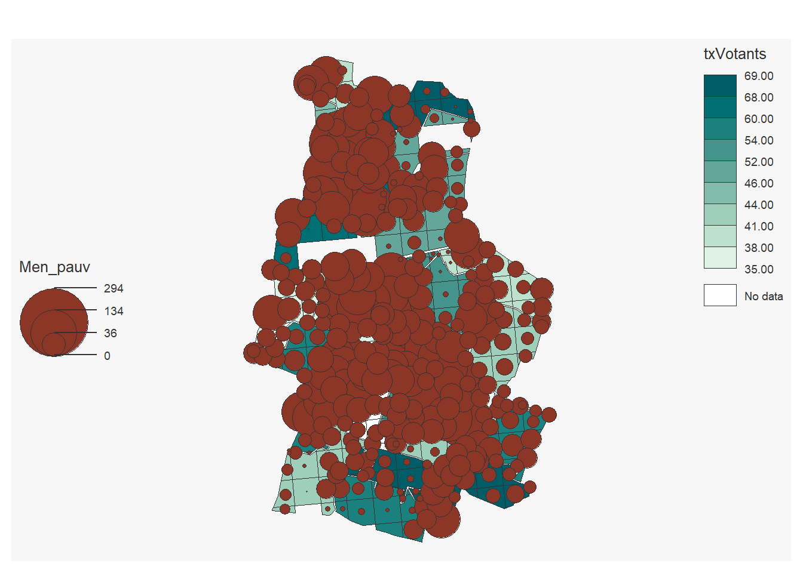

Révision
B. Maranget
10/05/2022
1 Objet
Suite à la correction de devoir maison, faire quelques rappels afin de préparer au mieux le partiel.
2 Structure du projet
2.1 Arborescence
Reprendre la maquette (cf début de chaque cours)

Questions à se poser ?
2.2 Chemins relatifs
getwd()## [1] "C:/Users/tachasa/03_coursDashboard"data <- read.csv("data/bondyElection.csv")
data <- read.csv("../03_coursDashboard/data/bondyElection.csv").. permet de remonter d’un répertoire
Conserver en mémoire que le knitr se fait dans le répertoire où est le .Rmd
2.3 Paramétrages du script
Les options du débuts de script sont importantes.

Ainsi que celle au début de chaque chunk.
Passer le eval en FALSE permet de vérfier la mise en page d’un knit qui pose problème.
Télécharger la maquette et modifier l’option dans le script.
A votre avis, warning et echo servent à quoi ?
3 Cartographie
3.1 Plot : une commande de base
library(sf)
bureau <- st_read("data/vote.gpkg", "zone")## Reading layer `zone' from data source
## `C:\Users\tachasa\03_coursDashboard\data\vote.gpkg' using driver `GPKG'
## Simple feature collection with 32 features and 5 fields
## Geometry type: MULTIPOLYGON
## Dimension: XY
## Bounding box: xmin: 661088.1 ymin: 6865338 xmax: 663354.7 ymax: 6869043
## Projected CRS: RGF93 / Lambert-93vote <- st_read("data/vote.gpkg", "jointure")## Reading layer `jointure' from data source
## `C:\Users\tachasa\03_coursDashboard\data\vote.gpkg' using driver `GPKG'
## Simple feature collection with 30 features and 18 fields
## Geometry type: MULTIPOLYGON
## Dimension: XY
## Bounding box: xmin: 661088.1 ymin: 6865338 xmax: 663354.7 ymax: 6869043
## Projected CRS: RGF93 / Lambert-93plot(bureau)
plot(bureau$geom, main = "les 31 bureaux de Bondy")
plot(vote, add = T)
3.2 Map_sf : pour les cartes choroplètes… mais pas seulement
library(mapsf)
insee <- st_read("data/insee.gpkg", "bondy")## Reading layer `bondy' from data source
## `C:\Users\tachasa\03_coursDashboard\data\insee.gpkg' using driver `GPKG'
## Simple feature collection with 188 features and 42 fields
## Geometry type: POLYGON
## Dimension: XY
## Bounding box: xmin: 661088.1 ymin: 6865338 xmax: 663354.7 ymax: 6869043
## Projected CRS: RGF93 / Lambert-93mf_map(insee, type = "choro", var = "Men_pauv" )
mf_map(vote, type = "prop", var = "Nb.votes.nuls", leg_pos = "left")
3.3 Leaflet : une carte de situation
Attention longitude et latitude
library(leaflet)
leaflet() %>% setView(lng = 48.902199, lat = 2.482800 , zoom = 12) %>% addTiles()leaflet() %>% setView(lat = 48.902199, lng = 2.482800 , zoom = 12) %>% addTiles()4 Fonctions spatiales
4.1 Lecture des fichiers
Chaque .gpkg peut avoir plusieurs couches
Toujours mettre le contenu du fichier dans une variable
data <- st_read("data/vote.gpkg")## Multiple layers are present in data source C:\Users\tachasa\03_coursDashboard\data\vote.gpkg, reading layer `zone'.
## Use `st_layers' to list all layer names and their type in a data source.
## Set the `layer' argument in `st_read' to read a particular layer.
## Reading layer `zone' from data source
## `C:\Users\tachasa\03_coursDashboard\data\vote.gpkg' using driver `GPKG'
## Simple feature collection with 32 features and 5 fields
## Geometry type: MULTIPOLYGON
## Dimension: XY
## Bounding box: xmin: 661088.1 ymin: 6865338 xmax: 663354.7 ymax: 6869043
## Projected CRS: RGF93 / Lambert-93st_layers("data/vote.gpkg")## Driver: GPKG
## Available layers:
## layer_name geometry_type features fields
## 1 zone Multi Polygon 32 5
## 2 inseeBondy Polygon 188 42
## 3 jointure Multi Polygon 30 18data <- st_read("data/vote.gpkg", "inseeBondy")## Reading layer `inseeBondy' from data source
## `C:\Users\tachasa\03_coursDashboard\data\vote.gpkg' using driver `GPKG'
## Simple feature collection with 188 features and 42 fields
## Geometry type: POLYGON
## Dimension: XY
## Bounding box: xmin: 661088.1 ymin: 6865338 xmax: 663354.7 ymax: 6869043
## Projected CRS: RGF93 / Lambert-934.2 Jointure
La jointure permet de lier des données textes à une géométrie, dans notre cas, le résultat des votes à la géométrie des bureaux (cf cours)
Pour les révisions, on constitue les données
cle <- c(1:10)
lettre <- c(letters [1:10])
str(bureau)## Classes 'sf' and 'data.frame': 32 obs. of 6 variables:
## $ Layer : chr "_Bureau 32" "_Bureau 24" "_Bureau 15" "_Bureau 14" ...
## $ bureauNo_1: chr NA "ECOLE ELEMENTAIRE OLYMPE DE GOUGES" "SALLE MAURICE PETITJEAN" "ECOLE MATERNELLE LEO LAGRANGE" ...
## $ aire : int 129558 260846 253109 229099 104115 230670 54899 91995 70288 140443 ...
## $ numBureau : int 32 24 15 14 12 30 5 9 28 26 ...
## $ txVotants : int NA 50 41 53 55 54 46 50 66 52 ...
## $ geom :sfc_MULTIPOLYGON of length 32; first list element: List of 1
## ..$ :List of 1
## .. ..$ : num [1:21, 1:2] 662713 662894 662926 663008 662925 ...
## ..- attr(*, "class")= chr [1:3] "XY" "MULTIPOLYGON" "sfg"
## - attr(*, "sf_column")= chr "geom"
## - attr(*, "agr")= Factor w/ 3 levels "constant","aggregate",..: NA NA NA NA NA
## ..- attr(*, "names")= chr [1:5] "Layer" "bureauNo_1" "aire" "numBureau" ...bureauCle <- bureau [1:10, c("txVotants")]
bureauCle$cle <- cle
texte <- data.frame(cle, lettre)
jointure <- merge(bureauCle, texte, by = "cle")
mf_map(jointure)
mf_label(jointure, "lettre", halo = T, cex = 2)
4.3 Intersection spatiale
On l’utilise pour croiser des données spatiales
inter <- st_intersection(bureau, insee)
plot(inter$geom)
Attention, il peut y avoir des problèmes de validité de géométrie
summary(bureau$geom)## MULTIPOLYGON epsg:2154 +proj=lcc ...
## 32 0 0summary(insee$geom)## POLYGON epsg:2154 +proj=lcc ...
## 188 0 0summary(inter$geom)## GEOMETRYCOLLECTION MULTIPOLYGON POLYGON epsg:2154
## 2 25 330 0
## +proj=lcc ...
## 0# On force en polygone
inter <- st_cast(inter, "MULTIPOLYGON")Cela signifie que l’on peut reprendre toutes les données des 2 couches.
mf_map(inter, type = "choro", var = "txVotants" )
mf_map(inter, type = "prop", var = "Men_pauv", leg_pos = "left")
4.4 Agrégation
L’agrégation permet de rassembler les valeurs sur des formes plus importantes, dans notre cas, carreaux insee et bureaux de vote (cf cours R spatial dernière partie)
L6ECSIG Construction et utilisation des SIG